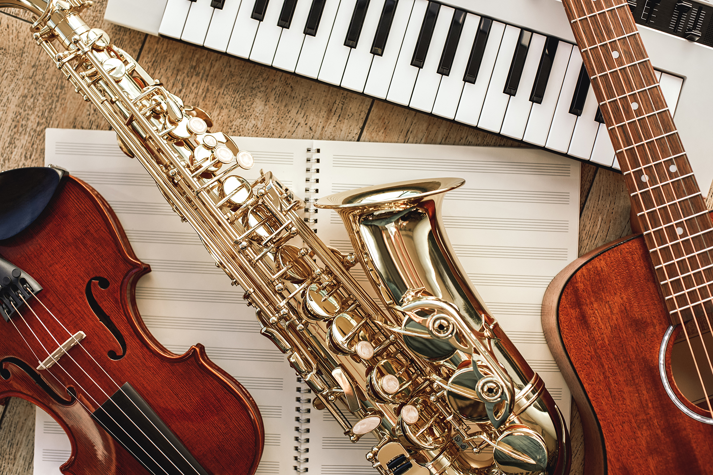

L'école de musique MarieSol vous accueille.
Bienvenue dans notre école MarieSol, une école dédiée à l'apprentissage de la musique par différents instruments.
Pendant plusieurs années, nous allons vous accompagner afin de vous transmettre notre passion de la musique.
Sur ce site web, vous pourrez vous inscrire à différents cours en fonction de votre instrument.
Vous pourrez de même consulter la liste des professeurs, le planning des cours et les disciplines enseignées au sein de notre préstigieux établissemnt.
Merci d'avoir fait confiance à l'école MarieSol.
Nous espérons vous revoir bientôt!